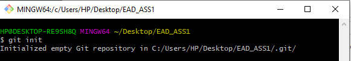

GitHub is an online software development platform used for storing, tracking, and collaborating on software projects. It enables developers to upload their own code files and to collaborate with fellow developers on open-source projects
New to git? Follow the steps below to get comfortable making changes to the code base, opening up a pull request (PR), and merging code into the primary branch. Any important git and GitHub terms are in bold with links to the official git reference materials.
The first two things you'll want to do are install git and create a free GitHub account.
Follow the instructions here to install git (if it's not already installed). Note that for this tutorial we will be using git on the command line only. While there are some great git GUIs (graphical user interfaces), I think it's easier to learn git using git-specific commands first and then to try out a git GUI once you're more comfortable with the command. A note: 95% of other online git resources and discussions will also be for the command-line interface.
Once you've done that, create a GitHub account here
A quick aside: git and GitHub are not the same thing. Git is an open-source, version control tool created in 2005 by developers working on the Linux operating system; GitHub is a company founded in 2008 that makes tools which integrate with git. You do not need GitHub to use git, but you cannot use GitHub without using git. There are many other alternatives to GitHub, such as GitLab, BitBucket, and “host-your-own” solutions such as gogs and gittea. All of these are referred to in git-speak as “remotes”, and all are completely optional. You do not need to use a remote to use git, but it will make sharing your code with others easier.
When creating a new project on your local machine using git, you'll first create a new repository (or often, 'repo', for short).
To initialize a git repository in the root of the folder, run the git init command:
Go ahead and add a new file to the project, using any text editor you like or running a touch command. `touch newfile.txt` just creates and saves a blank file named newfile.txt.
Once you've added or modified files in a folder containing a git repo, git will notice that the file exists inside the repo. But, git won't track the file unless you explicitly tell it to. Git only saves/manages changes to files that it tracks, so we’ll need to send a command to confirm that yes, we want git to track our new file.
After creating the new file, you can use the git status command to see which files git knows exist.
What this basically says is, "Hey, we noticed you created a new file called readme.txt, but unless you use the 'git add' command we aren't going to do anything with it.
One of the most confusing parts when you're first learning git is the concept of the staging environment and how it relates to a commit.
A commit is a record of what changes you have made since the last time you made a commit. Essentially, you make changes to your repo (for example, adding a file or modifying one) and then tell git to put those changes into a commit.
Commits make up the essence of your project and allow you to jump to the state of a project at any other commit.
So, how do you tell git which files to put into a commit? This is where the staging environment or index come in. As seen in Step 2, when you make changes to your repo, git notices that a file has changed but won't do anything with it (like adding it in a commit).
To add a file to a commit, you first need to add it to the staging environment. To do this, you can use the git add

Once you've used the git add command to add all the files you want to the staging environment, you can then tell git to package them into a commit using the git commit command.
Note: The staging environment, also called 'staging', is the new preferred term for this, but you can also see it referred to as the 'index'.
Add a file to the staging environment using the git add command.
If you rerun the git status command, you'll see that git has added the file to the staging environment (notice the "Changes to be committed" line).
To reiterate, the file has not yet been added to a commit, but it's about to be.
It's time to create your first commit!
Run the command git commit -m "Your message about the commit"
The message at the end of the commit should be something related to what the commit contains - maybe it's a new feature, maybe it's a bug fix, maybe it's just fixing a typo. Don't put a message like "asdfadsf" or "foobar". That makes the other people who see your commit sad. Very, very, sad. Commits live forever in a repository (technically you can delete them if you really, really need to but it’s messy), so if you leave a clear explanation of your changes it can be extremely helpful for future programmers (perhaps future you!) who are trying to figure out why some change was made years later.
Now that you've made a new commit, let's try something a little more advanced.
Say you want to make a new feature but are worried about making changes to the main project while developing the feature. This is where git branches come in.
Branches allow you to move back and forth between 'states' of a project. Official git docs describe branches this way: ‘A branch in Git is simply a lightweight movable pointer to one of these commits.’ For instance, if you want to add a new page to your website you can create a new branch just for that page without affecting the main part of the project. Once you're done with the page, you can merge your changes from your branch into the primary branch. When you create a new branch, Git keeps track of which commit your branch 'branched' off of, so it knows the history behind all the files.
Let's say you are on the primary branch and want to create a new branch to develop your web page. Here's what you'll do: Run git checkout -b
After running the above command, you can use the git branch command to confirm that your branch was created:
The branch name with the asterisk next to it indicates which branch you're on at that given time.